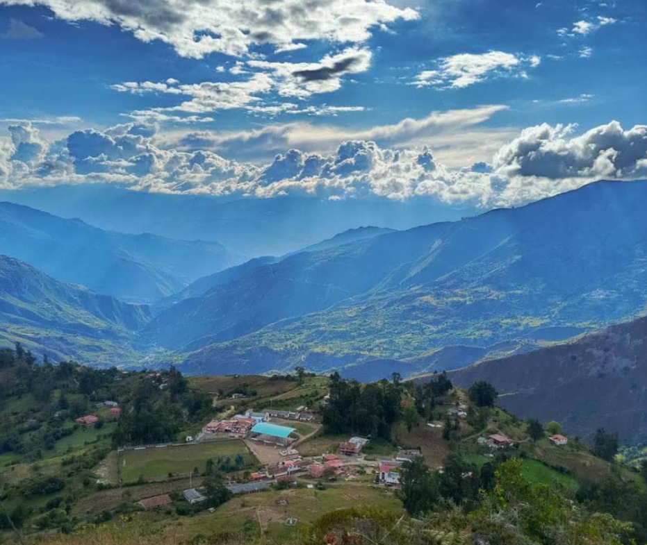
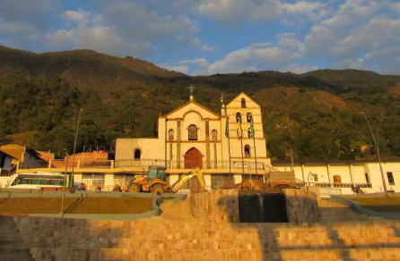
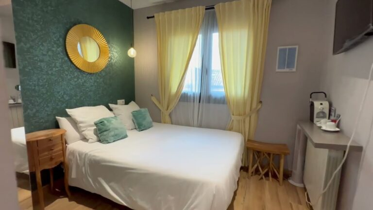

Balcon de las estrellas
Un lugar ideal para apreciar los paisajes montañosos de la Provincia de García Rovira y disfrutar de un ambiente tranquilo rodeado de naturaleza.
Zona rural de Macaravita, Santander.Descubre experiencias turísticas únicas

Un municipio lleno de tranquilidad, naturaleza y tradición santandereana.
Macaravita es un municipio de la provincia de García Rovira, en el departamento de Santander. Se caracteriza por sus paisajes montañosos, su clima fresco y la hospitalidad de sus habitantes. Su economía se basa principalmente en la agricultura y la ganadería, actividades que han impulsado el desarrollo del municipio y conservan las tradiciones de la región.

Un lugar ideal para apreciar los paisajes montañosos de la Provincia de García Rovira y disfrutar de un ambiente tranquilo rodeado de naturaleza.
Zona rural de Macaravita, Santander.
Es el principal punto de encuentro del municipio, rodeado por zonas verdes y la iglesia principal, donde visitantes y habitantes disfrutan de un ambiente tranquilo.
Centro de Macaravita, Santander.
Un hospedaje rodeado de naturaleza, ideal para descansar y disfrutar de la tranquilidad del municipio.
Macaravita, Santander.
Un alojamiento acogedor con ambiente familiar, perfecto para quienes desean conocer el municipio.
Centro de Macaravita, Santander.
Restaurante que ofrece comida típica santandereana preparada con ingredientes frescos de la región.
Centro de Macaravita, Santander.
Un restaurante familiar reconocido por sus platos caseros y la excelente atención a sus visitantes.
Macaravita, Santander.